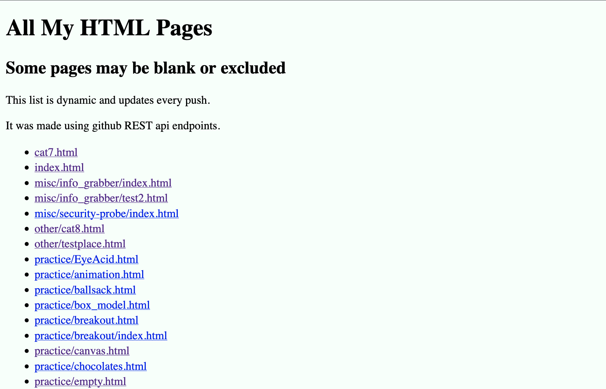

Old Personal Website
December 13, 2025

Main page
I used this site both as my very first web dev project, with examples of basic html
As well as a later launching point for my personal projects
Html Directory
I created this because I would commonly make an html file for every new concept I learned.
These html documents were rarely orgainzed and it was very difficult to remember the path for
every single one. Instead, I created this page that parses my github repo for every .html file
it then creates a link to it and displays the name/path on a list. The page works useing
githubs REST API endpoints, making it dynamic, refreshing every push.